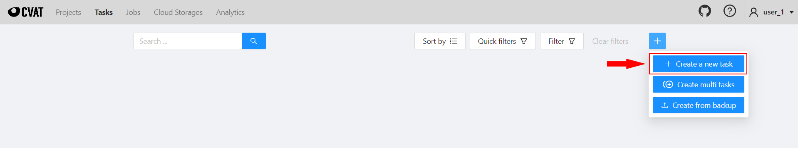
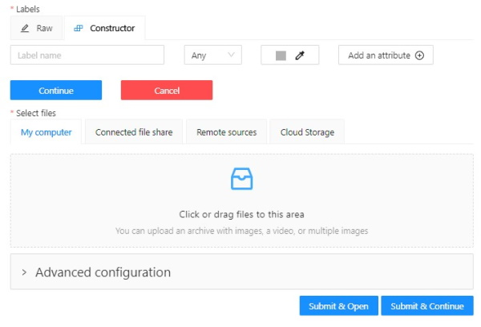
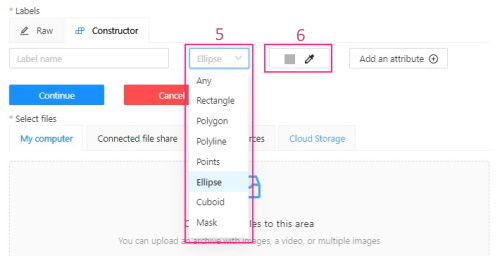
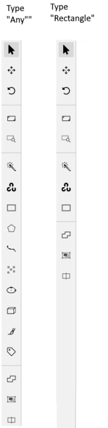
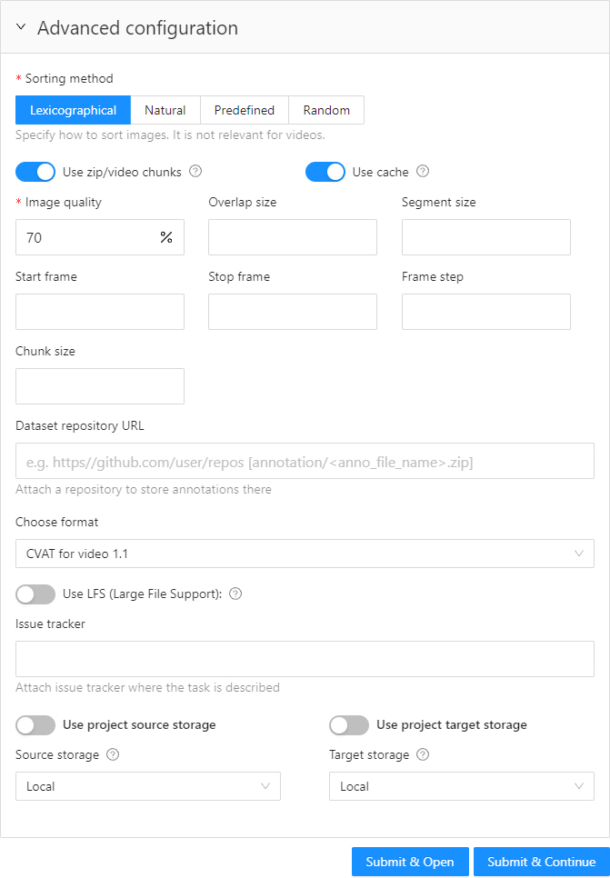

Create annotation task
To start annotating in CVAT, you need to create an annotation task and specify its parameters.
To create a task, on the Tasks page click + and select Create new task.

See:
Create a task
To create a new task, open task configurator:

And specify the following parameters:
-
In the Name field, enter the name of the new task.

-
(Optional) From the Projects drop-down, select a project for the new task.
Leave this field empty if you do not want to assign the task to any project.
Note: Following steps are valid if the task does not belong to a project.
If the task has been assigned to a project, the project’s labels will be applied to the task. -
On the Constructor tab, click Add label.
The label constructor menu will open:
-
In the Label name field, enter the name of the label.
-
(Optional) To limit the use of the label to a certain shape tool, from the Label shape drop-down select the shape.
-
(Optional) Select the color for the label.

-
(Optional) Click Add an attribute and set up its properties.
-
Click Select files to upload files for annotation.
-
Click Continue to submit the label and start adding a new one
or Cancel to terminate the current label and return you to the labels list. -
Click Submit and open to submit the configuration and open the created task,
or Submit and continue, to submit the configuration and start a new task.
Label shape
Labels (or classes) are categories of objects that you can annotate.
Label shape limits the use of the label to certain shape tool.
Any is the default setting that does not limit the use of the
label to any particular shape tool.
For example, you added:
- Label
sunwith the Label shape typeellipse - Label
carwith the Label shape typeany
As a result:
-
The
sunlabel will be available only for ellipse shape. -
The
carlabel will be available for all shapes.
The tools on the Controls sidebar will be limited to the selected types of shapes.
For example, if you select Any,
all tools will be available,
but if you select Rectangle for all labels,
only the Rectangle tool will be
visible on the sidebar.
Note: You cannot apply the Label shape to the AI and OpenCV tools, these tools will always be available.

You can change the shape of the label as needed. This change will not affect the existing annotation.
For example, if you created objects using polygons and then changed the label shape to polylines, all previously created objects will remain polygons. However, you will not be able to add new polygon objects with the same label.
Note: You cannot change the shape of the
skeletonlabel.
The Label shape field for theskeletonlabel is disabled.
Add an attribute
Attribute is a property of an annotated object, such as color, model, or other quality.
For example, you have a label for face and want to
specify the type of face. Instead of creating additional
labels for male and female, you can use attributes
to add this information.
There are two types of attributes:
- Immutable attributes are unique and do not change from frame to frame.
For example,
age,gender, andcolor. - Mutable attributes are temporary and can change from frame to frame.
For example,
pose,quality, andtruncated.
Added attributes will be available from the Objects menu:

To add an attribute, do the following:
-
Go to the Constructor tab and click Add attribute.

-
In the Name field enter the name of the attribute.
-
From the drop-down, select way to display the attribute in the Objects menu:
-
Selectenables a drop-down list, from which you can select an attribute.
If in the Attribute value field you add__undefined__, the drop-down list will have a blank value.
This is useful for cases where the attribute of the object cannot be clarified: -

-
Radioenables the selection of one option from several options. -
Checkboxenables the selection of multiple options. -
Textsets the attribute to a text field. -
Numbersets the attribute to numerical field in the following format:min;max;step.
-
-
In the Attribute values field, add attribute values.
To separate values use Enter.
To delete value, use Backspace or click x next to the value name. -
(Optional) For mutable attributes, select Mutable.
To delete an attribute, click Delete attribute.
Select files
There are several ways to upload files:
| Data source | Description |
|---|---|
| My computer | Use this option to select files from your laptop or PC. To select file: 1. Click on the Select files field:  . . 2. Select files to upload. |
| Connected file share | Advanced option. Upload files from a local or cloud shared folder. Note, that you need to mount a fileshare first. For more information, see Share path |
| Remote source | Enter a list of URLs (one per line) in the field. |
| Cloud Storage | Advanced option. To upload files from cloud storage, type the cloud storage name, choose the manifest file, and select the required files. For more information, see Attach cloud storage |
Editing labels in RAW format
The Raw is a way of working with labels for an advanced user.
It is useful when you need to copy labels from one independent task to another.
Note: Be careful with changing the raw specification of an existing task/project. Removing any “id” properties will lead to losing existing annotations. This property will be removed automatically from any text you insert to this field.

Raw presents label data in .json format with an option of editing and copying labels as text. The Done button applies the changes and the Reset button cancels the changes.
Data formats for a 3D task
To create a 3D task, you must prepare an archive with one of the following directory structures.
Note: You can’t mix 2D and 3D data in the same task.
VELODYNE FORMAT
Structure:
velodyne_points/
data/
image_01.bin
IMAGE_00 # unknown dirname,
# generally image_01.png can be under IMAGE_00, IMAGE_01, IMAGE_02, IMAGE_03, etc
data/
image_01.png 3D POINTCLOUD DATA FORMAT
Structure:
pointcloud/
00001.pcd
related_images/
00001_pcd/
image_01.png # or any other image 3D, DEFAULT DATAFORMAT Option 1
Structure:
data/
image.pcd
image.png 3D, DEFAULT DATAFORMAT Option 2
Structure:
data/
image_1/
image_1.pcd
context_1.png # or any other name
context_2.jpgAdvanced configuration
Use advanced configuration to set additional parameters for the task and customize it to meet specific needs or requirements.

The following parameters are available:
| Element | Description |
|---|---|
| Sorting method | Note: Does not work for the video data. Several methods to sort the data. For example, the sequence 2.jpeg, 10.jpeg, 1.jpeg after sorting will be: 1.jpeg, 10.jpeg, 2.jpeg 1.jpeg, 2.jpeg, 10.jpeg 2.jpeg, 10.jpeg, 1.jpeg |
| Use zip/video chunks | Use this parameter to divide your video or image dataset for annotation into short video clips a zip file of frames. Zip files are larger but do not require decoding on the client side, and video clips are smaller but require decoding. It is recommended to turn off this parameter for video tasks to reduce traffic between the client side and the server. |
| Use cache | Select checkbox, to enable on-the-fly data processing to reduce task creation time and store data in a cache with a policy of evicting less popular items. For more information, see Data preparation on the fly. |
| Image Quality | CVAT has two types of data: original quality and compressed. Original quality images are used for dataset export and automatic annotation. Compressed images are used only for annotations to reduce traffic between the server and client side. It is recommended to adjust the compression level only if the images contain small objects that are not visible in the original quality. Values range from 5 (highly compressed images) to 100 (not compressed |
| Overlap Size | Use this parameter to create overlapped segments, making tracking continuous from one segment to another. Note that this functionality only works for bounding boxes. This parameter has the following options: Interpolation task (video sequence). If you annotate with a bounding box on two adjacent segments, they will be merged into a single bounding box. In case the overlap is zero or the bounding box is inaccurate (not enclosing the object properly, misaligned or distorted) on the adjacent segments, it may be difficult to accurately interpole the object’s movement between the segments. As a result, multiple tracks will be created for the same object. Annotation task (independent images). If an object exists on overlapped segments with overlap greater than zero, and the annotation of these segments is done properly, then the segments will be automatically merged into a single object. If the overlap is zero or the annotation is inaccurate (not enclosing the object properly, misaligned, distorted) on the adjacent segments, it may be difficult to accurately track the object. As a result, multiple bounding boxes will be created for the same object. If the annotations on different segments (on overlapped frames) are very different, you will have two shapes for the same object. To avoid this, accurately annotate the object on the first segment and the same object on the second segment to create a track between two annotations. |
| Segment size | Use this parameter to divide a dataset into smaller parts. For example, if you want to share a dataset among multiple annotators, you can split it into smaller sections and assign each section to a separate job. This allows annotators to work on the same dataset concurrently. |
| Start frame | Defines the first frame of the video. |
| Stop frame | Defines the last frame of the video. |
| Frame Step | Use this parameter to filter video frames or images in a dataset. Specify frame step value to include only certain frames or images in the dataset. For example, if the frame step value is 25, the dataset will include every 25th frame or image. If a video has 100 frames, setting the frame step to 25 will include only frames 1, 26, 51, 76, and 100 in the dataset. This can be useful for reducing the size of the dataset, or for focusing on specific frames or images that are of particular interest. |
| Chunk size | Defines amount of frames to be packed in a chunk when send from client to server. The server defines automatically if the chunk is empty. Recommended values: |
| Dataset repository | Advanced option. URL link of the repository that specifies the path to the repository for storage ( default: annotation / <dump_file_name> .zip).Supports .zip and .xml formats. Field format: URL [PATH] example: https://github.com/project/repos.git [1/2/3/4/annotation.xml] Supported URL formats: https://github.com/project/repos[.git] github.com/project/repos[.git] git@github.com:project/repos[.git] After the task is created, the synchronization status will show up on the task page. If you specify a dataset repository, when you create a task, you will see a message about the need to grant access with the ssh key. This is the key you need to add to your github account. For other git systems, you can learn about adding an ssh key in their documentation. |
| Use LFS | Advanced option. Use this parameter for big annotation files, to create a repository with LFS support. |
| Issue tracker | Use this parameter to specify the issue tracker URL. |
| Source storage | Specify the source storage for importing resources like annotations and backups. If the task was assigned to the project, use the Use project source storage toggle to determine whether to use project values or specify new ones. |
| Target storage | Specify the target storage (local or cloud) for exporting resources like annotations and backups. If the task is created in the project, use the Use project target storage toggle to determine whether to use project values or specify new ones. |
To save and open the task, click Submit & Open .
To create several tasks in sequence, click Submit & Continue.
Created tasks will be displayed on the tasks page.